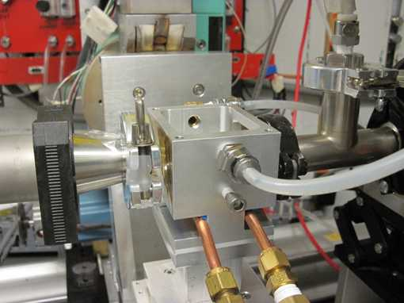

Sample
Environments

D-line solvent vapor annealing cell for
molecules, nanoparticles, and polymers
Sample environments don't have to be large or heavy, but can still be able to capture the essentials of in-situ materials processing and feature parameters that are on the scale of industrial production. Oftentimes a sample cell can be fitted into whatever space is available. The picture shows the D-line solvent vapor annealing cell which fits comfortably in the palm of your hand. One of the most exciting features of GISAXS and GIWAXS are real-time experiments. It takes a good flux, possibly focusing optics, a fast detector, and, last not least a sample cell, which controls the relevant environmental parameters for sample processing. For instance, we have developed small coating jigs that can measure self-assembly and crystallization kinetics in coated films with 15 microns spatial resolution and up to 100 images per second! See: Detlef-M. Smilgies, Ruipeng Li, Gaurav Giri, Kang Wei Chou, Ying Diao, Zhenan Bao, and Aram Amassian: "Look fast: Crystallization of conjugated molecules during solution shearing probed in-situ and in real time by X-ray scattering", Physica Status Solidi - Rapid Research Letters 7, 177-179 (2013) |